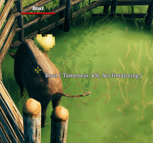

驯服
本站支持中英文站内搜索。带 ↗ 的链接指向外部网站；各页来源版本见页脚。
鬓猪、巨狼、平原牦牛、灰烬刚鬣和驼鹿可驯服，使其对玩家友好，并协助对抗敌对生物；鸡／母鸡从蛋孵出时已驯服。它们都可繁殖，方便获取掉落物。驯服狼可命令驻守或跟随战斗，驯服平原牦牛、灰烬刚鬣及驼鹿可骑乘。
驯服生物保留星级并传给后代，因此2星个体的掉落和战斗能力更强，非常值得驯服。
食用
驯服和繁殖都需要喂食。满足以下条件时，生物每10秒检查食物：
- 生物不能正在逃跑，例如鬓猪怕火逃跑、夜间狼在白天逃跑，或事件生物在事件结束后逃跑。
- 生物必须未进入警戒，即红色图标，或没有目标。察觉玩家的黄色图标不妨碍进食。
- 生物必须饥饿。
- 10米内最近的有效食物，必须能通过寻路抵达。
进食成功后，生物保持饱食10分钟。玩家睡觉时，饱食消退更快。
说明
- 只有目标死亡后，生物才可能处于无目标的警戒状态。其他失去目标的情况也会移除警戒。
- 活动生物仅在平静但察觉玩家，即黄色图标时进食。完全平静时反而会尝试逃跑。最简单是困入坑中，等事件结束、它平静下来后，奔跑制造噪音让其察觉。
- 有星级狼等夜间生物，首次喂食必须在夜间。白天需将狼困住并留在附近，防止消失。它到夜间才会进食。
- 寻路检查失败时，即使食物在进食范围内，也无法进食。
| 生物进食习惯 | ||
|---|---|---|
| 生物 | 所需食物 | 进食范围 |
| 鬓猪 | 蓝莓, 胡萝卜, 洋葱, 覆盆子, 红色蘑菇,或 芜菁 | 1米 |
| 狼 | 鬓猪肉, 鹿肉, 平原牦牛肉, 蜥蜴精尾巴, 生鱼肉, 鸡肉,或 香肠 | 1.4米 |
| 平原牦牛 | 大麦, 云莓 或 亚麻 | 4米 |
| 母鸡 | 胡萝卜种子, 芜菁种子, 洋葱种子, 山毛榉种子, 桦树种子, 大麦,或 蒲公英 | 1米 |
| 灰烬刚鬣 | 余烬泡泡, 酒莓束, 蕨菜花 | 4米 |
| 驼鹿 | 越橘, ? | ?米 |
驯服


满足以下条件时，每三秒推进一次驯服：
- 生物不饥饿。
- 生物未警戒，没有红色感叹号。
- 区域处于已激活状态，即任一玩家在约64米内，精确距离取决于底层区块系统。
黄色爱心表示驯服成功推进。准星悬停文字也显示进度，但需靠得很近，常会惊动生物。
驯服始终需要600次成功推进，即30分钟。完成时屏幕显示消息。
说明
- 生物需有足够空间进食。使用圈栏或挖坑时确认尺寸够大，否则可能一直站着不吃。
- 生物每次只吃堆叠中的一个物品，因此无需逐个投食。玩家基地建筑可防止食物消失。
- 生物对另一只生物产生敌意时便会进入警戒状态。鬓猪过于靠近火源时也会警戒。
- 除平原牦牛外，多数生物只在活动区域可见。看得见鬓猪或狼，就说明距离足够近。
- 首次成功驯服推进会移除事件及夜间生物的消失标记。
- 这也让夜间狼能在白天进食。
- 驯服不中断时，只需三份食物。
- 使用动物低语酒可将连续驯服时间由30分钟减半至15分钟。
- 睡眠不会加快驯服，只会浪费食物。
圈栏
虽然并非必需，仍强烈建议建圈栏限制待驯服生物，防止走失或被其他生物伤害。遮挡玩家视线也能降低恐惧和敌意，避免驯服拖长。用镐击挖个坑最有效，因为引入圈栏常会使其敌对。敌对生物接近不了玩家时，会尝试破坏建筑，平原牦牛尤其危险，可迅速摧毁石建筑。圈栏建好后，可激怒生物，边被追赶边引入，或用深渊之枪拖入。
驯养生物
驯服会带来以下改变：
- 按左Shift + E可改名。
- 按E互动后，屏幕显示“（生物名）爱你”，并出现粉色爱心云。
- 鬓猪不再怕火。
- 可命令狼驻守或跟随，但不会跟随穿过传送门。
- 跟随状态有时似乎会丢失，可能需偶尔重新设置。
- 狼不再嚎叫，幼狼除外。
- 平原牦牛、灰烬刚鬣及驼鹿分别可用平原牦牛鞍、灰烬刚鬣鞍或驼鹿鞍骑乘。
- 他们改变他们的 阵营 至玩家阵营。
- 玩家仅可用屠夫刀，或启用友军伤害后，伤害它们。
- 不会攻击其他驯服生物。
- 它们会攻击除同种外的任何野生生物。
- 失去对生成点的锚定，可更自由移动。
- 注意：废弃农场及符文石的鬓猪会保留锚点，始终尝试返回，难以管理。建议原地繁殖后搬运后代，或给原个体命名，繁殖后将其杀死。原个体常坐在圈栏角落，盯着出生点，不愿游走，可能妨碍繁殖。
- 需喂食才能被动恢复生命。
繁殖
每30秒检查繁殖。满足以下条件时，生物获得一个爱心点：
- 33%的随机判定成功。
- 生物不饥饿。
- 生物未警戒，没有红色感叹号。
- 成年生物及后代总数低于上限，包括自身。
- 附近有合适伴侣：已驯服、不饥饿、未怀孕。
- 区域处于已激活状态，即任一玩家在约64米内，精确距离取决于底层区块系统。
粉色爱心表示成功获得爱心点。积累足够后进入怀孕状态，但没有视觉提示。经过设定时间后生产，以红色云雾显示。
说明
- 后代继承生育者的星级。一星及二星个体若各自生产，就会分别得到一星、二星后代。
- 后代出生即驯服，需要屠夫刀或启用友军伤害才能杀死。
- 后代成年前无法互动，包括命名或下令。
- 睡眠不会加快繁殖，只会浪费食物。
- 睡觉或离开区域会影响怀孕计时，但孕期太短，几乎没有实际收益。
- 睡觉或离开区域时，后代仍会成长。
- 鸡蛋和灰烬刚鬣蛋需靠热源保暖，才能孵出鸡和小小猪刚鬣，比其他可驯服动物多一道繁殖步骤。
- 保持温暖即可在同一区域孵化任意数量的蛋。数量限制仅作用于产蛋，会检查母鸡、鸡和蛋的总数。
- 已怀孕动物仍会生产，因此最终数量可超过上限。
| 生物 | 所需爱心点 | 数量上限 | 伴侣检查范围 | 孕期 | 出生位置偏移 | 幼体成长时间 | 幼体掉落物 |
|---|---|---|---|---|---|---|---|
| 鬓猪 | 3 | 10米内5只 | 3米 | 1分钟 | 1米 | 50分钟 | 无 |
| 狼 | 3 | 10米内4只 | 3米 | 1分钟 | 1米 | 50分钟 | 无 |
| 平原牦牛 | 4 | 20米内4只 | 8米 | 2分钟 | 2米 | 100分钟 | 1 平原牦牛肉 |
| 母鸡 | 3 | 10米内10只 | 4米 | 1分钟 | 0米 | 30分钟温暖 鸡蛋 孵化为 鸡 | 1 羽毛 |
| 灰烬刚鬣 | 3 | 10米内10只 | 4米 | 1分钟 | 0米 | 保暖的蛋30分钟孵出灰烬刚鬣幼崽。
灰烬刚鬣幼崽50分钟长成成年个体。 |
20%机会每一次1 灰烬刚鬣膀胱, 1 灰烬刚鬣皮 与 1 灰烬刚鬣尾 |
| 驼鹿 | 3 | 10米内5只 | 3米 | 1分钟 | 1米 | 50分钟 驼鹿宝宝 增长到 驼鹿 | 无 |
Boars, Wolves, Lox, Asksvins, and Moose can be tamed to make them friendly with the players and help against fighting other hostile creatures, while Chickens/Hens are already tamed once they are hatched from an egg. They can all also be bred, which enables easy access to their drops. Tamed Wolves can be commanded to guard a specific place or to follow into a battle. Tamed Lox, Asksvin, and Moose can be ridden.
Tamed creatures keep their stars and will pass them to their offspring. This makes 2-star creatures very valuable for taming for their increased drops and combat ability.
Eating
Both taming and breeding require the creatures to be fed. Creatures check for food every 10 seconds if the following conditions are true:
- The creature must not be fleeing (Boars from fire, nighttime Wolves during the day or event creatures after the event).
- The creature must either not be alerted (red indicator) or it cannot have a target. Being aware does not prevent eating (yellow indicator).
- The creature must be hungry.
- The closest valid food item within 10 meters can be reached with pathfinding.
After successfully eating, the creature stays fed for 10 minutes. Food expires faster when players sleep.
Notes
- Creatures can only be alerted without a target after their target dies. Other cases of losing the target also remove the alert status.
- Event creatures can only eat food when calm and aware of the player (yellow icon). When fully calm, they will attempt to flee instead. The easiest way is to trap them in a hole, wait until the event ends, wait until they calm down and then create some noise by running to make them aware.
- Nighttime creatures like starred Wolves must be initially fed during the night. If it is day time, the player must trap the Wolf and wait nearby to prevent it from despawning. It will not eat until night.
- Failing the pathfinding check prevents eating even if the food is within the eating range.
- Lox will not eat if there is a roof too close to them. This is because their pathfinding is based on size of Trolls.
- Automatic breeders require a specific design, as the creatures usually stand on an area that is not valid for pathfinding (wood poles or small floors).
| Creature Feeding Habits | ||
|---|---|---|
| Creature | Required Food | Eating Range |
| Boar | Blueberries, Carrots, Onions, Raspberries, Red Mushrooms, or Turnips | 1 meter |
| Wolf | Boar Meat, Deer Meat, Lox Meat, Neck Tail, Raw Fish, Chicken Meat, or Sausages | 1.4 meters |
| Lox | Barley, Cloudberries or Flax | 4 meters |
| Hen | Carrot Seeds, Turnip Seeds, Onion Seeds, Beech Seeds, Birch Seeds, Barley, or Dandelion | 1 meter |
| Asksvin | Smoke Puff, Vineberry Cluster, Fiddlehead | 4 meters |
| Moose | Lingonberries, ? | ? meters |
Taming
Taming progresses every three seconds if the following conditions are true:
- The creature is not hungry.
- The creature is not alerted (no red exclamation mark).
- The area is active (any player within ~64 meters, exact distance depends on the underlying zone system).
Yellow hearts indicate successful taming progress. Progress is also shown on the creature hover text, but this requires getting very close, which often alerts the creature.
Taming always requires 600 successful ticks (30 minutes). When taming is finished, a message is shown on the screen.
Notes
- Creatures must have sufficient space to eat. Check to ensure the space is large enough when using pens or digging a pit as this can cause the creature to stand idle and never eat.
- Creatures only eat one item from stacks, so the food does not have to be thrown one by one. Player base structures can be used to prevent the food from despawning.
- Creatures become alerted if they become aggressive to another creature. Boars also become alerted when too close to a source of fire.
- Most creatures are only visible when they are in an active area (except Lox). If you can see the Boar or Wolf, then you are close enough.
- First tick of taming will remove "despawn" flags from event and nighttime creatures.
- This also allows nighttime Wolves to eat during the day.
- If taming is done without interruption, only three food items are needed.
- When using the Brew of Animal Whispers the time of taming is halved from 30 minutes without interruption to 15 minutes without interruption.
- Sleeping does not make taming faster but will waste the food.
Pens
While not strictly necessary, it is highly recommended to construct a pen for containing creatures intended for taming. This prevents them from wandering off or being damaged by other creatures. Additionally, by keeping the creatures out of line of sight from the player, there is a much lower chance of them becoming frightened and aggressive, which can prolong the taming process. A simple hole dug in the ground with a pickaxe works best, as luring creatures into a pen often leads to them becoming hostile. Hostile creatures will attempt to damage structures if they cannot reach the player. This is especially concerning with creatures like Lox, which can inflict significant damage and quickly destroy even stone buildings. Once a pen has been built, a player can either aggro the creature and lead them inside while being chased, or use the Abyssal Harpoon to drag them in.
Tamed
Taming applies following changes to creatures:
- They can be renamed with LShift + E.
- They can be interacted with E to show the text "(Creature name) loves you" onscreen as well as a cloud of pink hearts.
- Boars are no longer afraid of fire.
- Wolves can be commanded to stay or follow. However, they will not follow through portals.
- Follow state seems to be sometimes lost and may require "refreshing" once in a while.
- Wolves no longer howl (does not apply to pups).
- Lox, Asksvin, and Moose allow riding with a Lox Saddle, Asksvin Saddle, or Moose Saddle respectively.
- They change their faction to the player faction.
- Players can only harm them with Butcher Knife or after enabling friendly fire.
- They will not attack any other tamed creatures.
- They will attack any wild creatures, except their own species.
- They lose anchoring to their spawn point which allows them to move more freely.
- Note: Boars from abandoned farms and Runestones will keep their anchor point. They will always try to return home, which makes handling them difficult. It is recommended to either breed these on the spot and move the offspring instead, or name the original tamed animal and then once bred, kill it. One issue with using the original animal is that it will tend to sit in a corner of a pen, staring at its spawn point, which can interfere with breeding as it does not tend to roam the pen.
- They require feeding for the passive health regeneration.
Breeding
Breeding is checked every 30 seconds. Creatures gain a love point if the following conditions are true:
- Random roll of 33% succeeds.
- The creature is not hungry.
- The creature is not alerted (no red exclamation mark).
- Total number of creatures and offspring is less than the limit (including the creature itself).
- Suitable partner exists nearby (tamed, not hungry, not pregnant).
- The area is active (any player within ~64 meters, exact distance depends on the underlying zone system).
Successful love point is indicated by pink hearts. After gaining enough love points, the creature becomes pregnant, which is not visualized. After a set time, the creature gives birth, visualized by a red cloud.
Notes
- Offspring inherit stars from the parent that gives birth to it. If a one star and a two star both give birth, there will be a one star and a two star offspring.
- Offspring are tame at birth and require a Butcher Knife or friendly fire to kill.
- Offspring cannot be interacted with (no renaming or commanding) until they become an adult.
- Sleeping does not make breeding faster but will waste the food.
- Pregnancy timer is affected by sleeping or being away, but pregnancy is so short as to not see any real benefit from it.
- Offspring grow while sleeping or being away.
- Chicken eggs and Asksvin eggs have to be kept warm by a heat source to hatch Chickens and Asksvin Hatchlings, requiring an additional breeding step compared to the other tameable animals.
- An unlimited number of eggs can be hatched in an area by keeping them warm. The population limitation only applies to egg laying, where the sum of hens, chickens, and eggs is checked.
- The final population can be higher than the total limit because already pregnant animals still give birth.
| Creature | Required love points | Total limit | Partner check range | Pregnancy duration | Birth offset | Offspring grow time | Offspring drops |
|---|---|---|---|---|---|---|---|
| Boar | 3 | 5 within 10 meters | 3 meters | 1 minute | 1 meter | 50 minutes | None |
| Wolf | 3 | 4 within 10 meters | 3 meters | 1 minute | 1 meter | 50 minutes | None |
| Lox | 4 | 4 within 20 meters | 8 meters | 2 minutes | 2 meters | 100 minutes | 1 Lox Meat |
| Hen | 3 | 10 within 10 meters | 4 meters | 1 minute | 0 meters | 30 minutes for warm Egg to hatch to Chicken | 1 Feathers |
| Asksvin | 3 | 10 within 10 meters | 4 meters | 1 minute | 0 meters | 30 minutes for warm egg to hatch to Asksvin Hatchling
50 minutes for Asksvin Hatchling to grow to Asksvin |
20% chance each of 1 Asksvin Bladder, 1 Asksvin Hide and 1 Asksvin Tail |
| Moose | 3 | 5 within 10 meters | 3 meters | 1 minute | 1 meter | 50 minutes for Moose Calf to grow to Moose | None |